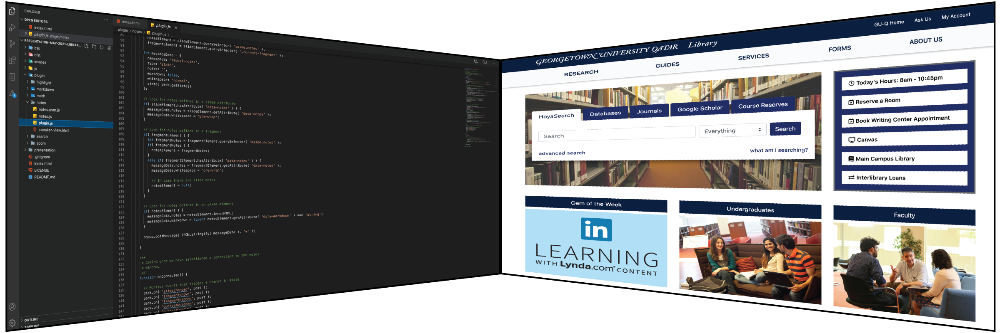
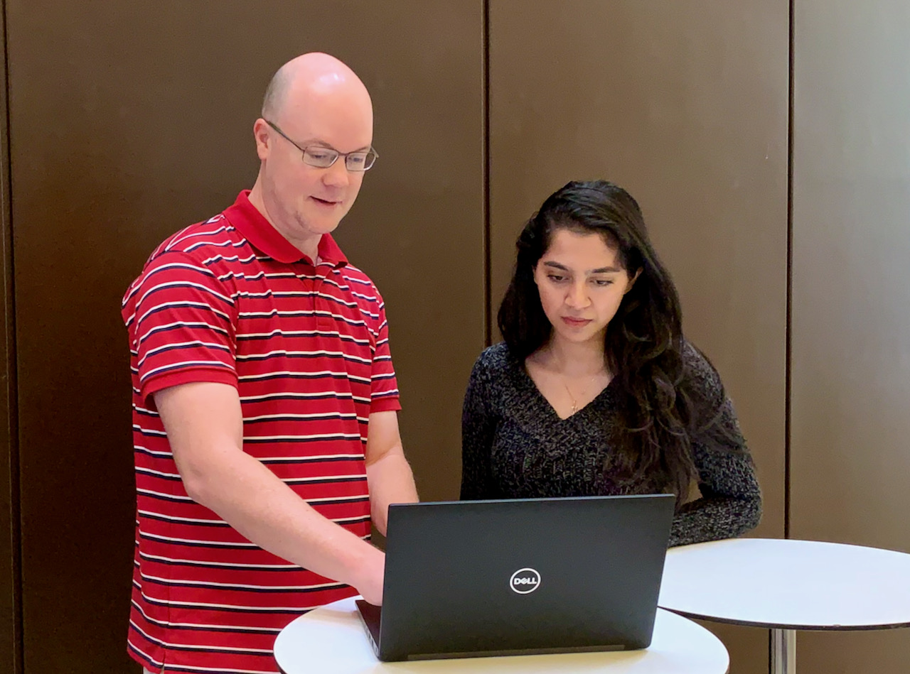

Robert Laws
Library Website Redevelopment Project
Candidate Presentation for Systems and Discovery Services Librarian
1. Project Context & Details
1. Project Context & Details
- In 2019, the Georgetown University in Qatar launched a new version of their website
- The library website needed to be visually redesigned to be consistent with the changes
- Opportunity to review the analytics, usability, information architecture, and content of the website
Library Website in 2018

New Georgetown University Qatar Website in 2019
Project Details
- Timeline: Spring 2019, Launch: July 8, 2019
- Core Project Team: 3 Library Staff members
-
Key Stakeholders:
- Library administration
- Communications department
- Faculty
- Students
- Local community
2. Challenges
2. Challenges
-
Balancing priorities between different stakeholders
- Communications department
- Library staff
- Library & University IT departments
- Managing the technical, visual, and communication components of the project
- Keeping track of project tasks, deadlines, and deliverables
3. Solution - Documentation
3. Solution - Documentation
Example - Requirements Document
- Align the library website to the main GU-Q website
- Refresh the visual content such as images and logos
- Re-organize/re-evaluate site content based on user feedback & analytics
- Implement improved accessibility standards
- Scope was Library website only (not libGuides, marketing materials, signage, etc.)
4. Solution - Communication
4. Solution - Communication
- Team comprised of members representing different areas of the library - key areas had a voice in the process
- Agreed upon project planning documents
- Cloud storage for documents and files
- Regularly scheduled meetings to discuss project tasks and decisions
5. Project Execution
5. Project Execution
Project Stages
- Analytics Review
- User Research
- Information Architecture
- UX Design (Tools: Adobe XD, Photoshop, Illustrator)
- Development
- Testing
- Deployment
Examples
Analytics Review

Usability Testing
UX Research & Information Architecture

UX Design & Content Development
- Work with library staff to (re)develop content
- Apply University visual brand guidelines
- Apply Library content guidelines
UX Design - Wireframes

Development - Coding
Github Repository for Project
Directions
Building Access & Parking
The Georgetown University in Qatar Library...
The library welcomes all visitors...
Development - In Action
Deployment - Home Page
Deployment - Sub-Page

6. What lessons did you learn while completing the project?
6. What lessons did you learn while completing the project?
- Project requirements, scope, & goals must be clear
- Team members need to be active & engaged
- Roles and responsibilities must be clearly understood
- Support from management is essential to execute the project
- Flexibility - with time, people, and some deadlines
7. How do you feel about the outcome?
7. How do you feel about the outcome?
Positive Outcome 😁👍
- Project was completed on time
- Website was well-received by stakeholders & users